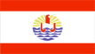
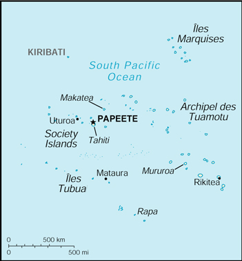

{kind=link}


| French Polynesia |
 |
|
|
 | |
| Introduction |
Background: The French annexed various Polynesian island groups during the 19th century. In September 1995, France stirred up widespread protests by resuming nuclear testing on the Mururoa atoll after a three-year moratorium. The tests were suspended in January 1996.
| Geography |
Location: Oceania, archipelago in the South Pacific Ocean, about one-half of the way from South America to Australia
Geographic coordinates: 15 00 S, 140 00 W
Map references: Oceania
Area:
total:
4,167 sq km (118 islands and atolls)
land:
3,660 sq km
water:
507 sq km
Area - comparative: slightly less than one-third the size of Connecticut
Land boundaries: 0 km
Coastline: 2,525 km
Maritime claims:
exclusive economic zone:
200 nm
territorial sea:
12 nm
Climate: tropical, but moderate
Terrain: mixture of rugged high islands and low islands with reefs
Elevation extremes:
lowest point:
Pacific Ocean 0 m
highest point:
Mont Orohena 2,241 m
Natural resources: timber, fish, cobalt, hydropower
Land use:
arable land:
1%
permanent crops:
6%
permanent pastures:
5%
forests and woodland:
31%
other:
57% (1993 est.)
Irrigated land: NA sq km
Natural hazards: occasional cyclonic storms in January
Environment - current issues: NA
Geography - note: includes five archipelagoes; Makatea in French Polynesia is one of the three great phosphate rock islands in the Pacific Ocean - the others are Banaba (Ocean Island) in Kiribati and Nauru
| People |
Population: 249,110 (July 2000 est.)
Age structure:
0-14 years:
30% (male 38,736; female 37,197)
15-64 years:
65% (male 83,986; female 76,973)
65 years and over:
5% (male 6,127; female 6,091) (2000 est.)
Population growth rate: 1.78% (2000 est.)
Birth rate: 19.01 births/1,000 population (2000 est.)
Death rate: 4.41 deaths/1,000 population (2000 est.)
Net migration rate: 3.14 migrant(s)/1,000 population (2000 est.)
Sex ratio:
at birth:
1.05 male(s)/female
under 15 years:
1.04 male(s)/female
15-64 years:
1.09 male(s)/female
65 years and over:
1.01 male(s)/female
total population:
1.07 male(s)/female (2000 est.)
Infant mortality rate: 9.3 deaths/1,000 live births (2000 est.)
Life expectancy at birth:
total population:
74.79 years
male:
72.47 years
female:
77.22 years (2000 est.)
Total fertility rate: 2.28 children born/woman (2000 est.)
Nationality:
noun:
French Polynesian(s)
adjective:
French Polynesian
Ethnic groups: Polynesian 78%, Chinese 12%, local French 6%, metropolitan French 4%
Religions: Protestant 54%, Roman Catholic 30%, other 16%
Languages: French (official), Tahitian (official)
Literacy:
definition:
age 14 and over can read and write
total population:
98%
male:
98%
female:
98% (1977 est.)
| Government |
Country name:
conventional long form:
Territory of French Polynesia
conventional short form:
French Polynesia
local long form:
Territoire de la Polynesie Francaise
local short form:
Polynesie Francaise
Data code: FP
Dependency status: overseas territory of France since 1946
Government type: NA
Capital: Papeete
Administrative divisions:
none (overseas territory of France); there are no first-order administrative divisions as defined by the US Government, but there are 5 archipelagic divisions named Archipel des Marquises, Archipel des Tuamotu, Archipel des Tubuai, Iles du Vent, and Iles Sous-le-Vent
note:
Clipperton Island is administered by France from French Polynesia
Independence: none (overseas territory of France)
National holiday: National Day, Taking of the Bastille, 14 July (1789)
Constitution: 28 September 1958 (French Constitution)
Legal system: based on French system
Suffrage: 18 years of age; universal
Executive branch:
chief of state:
President Jacques CHIRAC of France (since 17 May 1995), represented by High Commissioner of the Republic Paul RONCIERE (since NA 1994)
head of government:
President of the Territorial Government of French Polynesia Gaston FLOSSE (since 4 April 1991); President of the Territorial Assembly Justin ARAPARI (since 13 May 1996)
cabinet:
Council of Ministers; president submits a list of members of the Territorial Assembly for approval by them to serve as ministers
elections:
French president elected by popular vote for a seven-year term; high commissioner appointed by the French president on the advice of the French Ministry of Interior; president of the Territorial Government and the president of the Territorial Assembly are elected by the members of the assembly
Legislative branch:
unicameral Territorial Assembly or Assemblee Territoriale (41 seats; members are elected by popular vote to serve five-year terms)
elections:
last held 12 May 1996 (next to be held NA 2001)
election results:
percent of vote by party - NA; seats by party - People's Rally for the Republic (Gaullist) 22, Independent Front for the Liberation of Polynesia 10, New Fatherland Party 5, other 4
note:
one seat was elected to the French Senate on 24 September 1989 (next to be held NA September 1998); results - percent of vote by party - NA; seats by party - UC 1; two seats were elected to the French National Assembly on 25 May - 1 June 1997 (next to be held NA 2002); results - percent of vote by party - NA; seats by party - People's Rally for the Republic (Gaullist) 2
Judicial branch: Court of Appeal or Cour d'Appel; Court of the First Instance or Tribunal de Premiere Instance; Court of Administrative Law or Tribunal Administratif
Political parties and leaders: Centrist Union or UC [leader NA]; Entente Polynesian [Arthur CHUNG]; Haere i Mua [Alexandre LEONTIEFF]; Independent Front for the Liberation of Polynesia (Tavini Huiraatira) [Oscar TEMARU]; Independent Party (Ia Mana Te Nunaa) [Jacques DROLLET]; New Fatherland Party (Ai'a Api) [Emile VERNAUDON]; People's Rally for the Republic (Tahoeraa Huiraatira) [Gaston FLOSSE]; Polynesian Union Party (includes Te Tiarama and Pupu Here Ai'a Party) [Jean JUVENTIN]; Pupu Taina [Michel LAW]; Te Aratia Ote Nunaa (Tinomana Ebb); Te e'a No Maohi Nui [Jean-Marius RAAPOTO]
International organization participation: ESCAP (associate), FZ, ICFTU, SPC, WMO
Diplomatic representation in the US: none (overseas territory of France)
Diplomatic representation from the US: none (overseas territory of France)
Flag description: two narrow red horizontal bands encase a wide white band; centered on the white band is a disk with blue and white wave pattern on the lower half and gold and white ray pattern on the upper half; a stylized red, blue and white ship rides on the wave pattern; the French flag is used for official occasions
| Economy |
Economy - overview: Since 1962, when France stationed military personnel in the region, French Polynesia has changed from a subsistence economy to one in which a high proportion of the work force is either employed by the military or supports the tourist industry. Tourism accounts for about one-fourth of GDP and is a primary source of hard currency earnings. The small manufacturing sector primarily processes agricultural products. The territory benefited from a five-year (1994-98) development agreement with France aimed principally at creating new jobs.
GDP: purchasing power parity - $2.6 billion (1997 est.)
GDP - real growth rate: NA%
GDP - per capita: purchasing power parity - $10,800 (1997 est.)
GDP - composition by sector:
agriculture:
4%
industry:
18%
services:
78% (1997)
Population below poverty line: NA%
Household income or consumption by percentage share:
lowest 10%:
NA%
highest 10%:
NA%
Inflation rate (consumer prices): 1.5% (1994)
Labor force: 118,744 (of which 70,044 are employed) (1988)
Labor force - by occupation: agriculture 13%, industry 19%, services 68% (1997)
Unemployment rate: 15% (1992 est.)
Budget:
revenues:
$1 billion
expenditures:
$900 million, including capital expenditures of $185 million (1996)
Industries: tourism, pearls, agricultural processing, handicrafts
Industrial production growth rate: NA%
Electricity - production: 360 million kWh (1998)
Electricity - production by source:
fossil fuel:
59.72%
hydro:
40.28%
nuclear:
0%
other:
0% (1998)
Electricity - consumption: 335 million kWh (1998)
Electricity - exports: 0 kWh (1998)
Electricity - imports: 0 kWh (1998)
Agriculture - products: coconuts, vanilla, vegetables, fruits; poultry, beef, dairy products
Exports: $212 million (f.o.b., 1996)
Exports - commodities: cultured pearls 50%, coconut products, mother-of-pearl, vanilla, shark meat (1997)
Exports - partners: US 11%, France 6% (1997)
Imports: $860 million (c.i.f., 1996)
Imports - commodities: fuels, foodstuffs, equipment
Imports - partners: France 44.7%, US 13.9% (1994)
Debt - external: $NA
Economic aid - recipient: $450.4 million (1995)
Currency: 1 Comptoirs Francais du Pacifique franc (CFPF) = 100 centimes
Exchange rates: Comptoirs Francais du Pacifique francs (CFPF) per US$1 - 117.67 (January 2000), 111.93 (1999), 107.25 (1998), 106.11 (1997), 93.00 (1996), 90.75 (1995); note - linked at the rate of 18.18 CFPFs to the French franc
Fiscal year: calendar year
| Communications |
Telephones - main lines in use: 32,000 (1995)
Telephones - mobile cellular: 4,000 (1995)
Telephone system:
domestic:
NA
international:
satellite earth station - 1 Intelsat (Pacific Ocean)
Radio broadcast stations: AM 2, FM 14, shortwave 2 (1998)
Radios: 128,000 (1997)
Television broadcast stations: 7 (plus 17 low-power repeaters) (1997)
Televisions: 40,000 (1997)
Internet Service Providers (ISPs): NA
| Transportation |
Railways: 0 km
Highways:
total:
792 km
paved:
792 km
unpaved:
0 km (1995 est.)
Ports and harbors: Mataura, Papeete, Rikitea, Uturoa
Merchant marine:
total:
4 ships (1,000 GRT or over) totaling 5,240 GRT/7,765 DWT
ships by type:
cargo 1, passenger/cargo 2, refrigerated cargo 1 (1999 est.)
Airports: 45 (1999 est.)
Airports - with paved runways:
total:
30
over 3,047 m:
2
1,524 to 2,437 m:
5
914 to 1,523 m:
17
under 914 m:
6 (1999 est.)
Airports - with unpaved runways:
total:
15
914 to 1,523 m:
5
under 914 m:
10 (1999 est.)
| Military |
Military branches: French Forces (includes Army, Navy, Air Force), Gendarmerie
Military - note: defense is the responsibility of France
| Transnational Issues |
Disputes - international: none